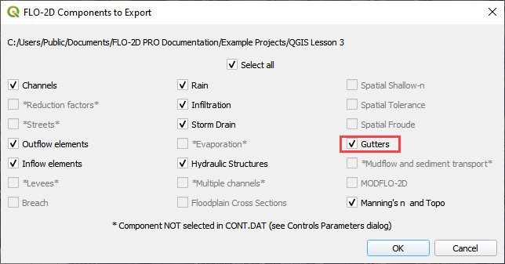

Gutters¶
Overview¶
In the FLO-2D model, street gutters convey shallow flow using a typical curb and gutter cross section that has a triangular shape created by the cross slope associated with the street crown. For the FLO-2D gutter routing, the triangular flow area is assumed to have a 2 percent from the middle of the street to the trough of the gutter. The gutter flow is exchanged with other upstream and downstream gutter elements, the sidewalk, and other street elements (not having a gutter). Floodplain flow is exchanged with the gutter elements through the sidewalk interface. See the FLO-2D Reference Manual for more information on using the Gutter component with FLO-2D.
Digitize or Copy Data¶
Select the layer or the Gutter Line Layer and click Toggle Editing. Create polygons or polylines that represent the gutter alignment. Enter the data from the attributes table. Save the Gutter layer and close the editor.
Sample Data¶
Click the Sampling Gutter Values icon in the Grid Tools and click OK when the process is complete. Fill the Global values and click OK to close the global data.
Click OK to close the calculator.
Fill out the global values table and click OK.
Export Data¶
It is not necessary to turn on a Gutter Switch. If the GUTTER.DAT file is in the project folder, Gutters will be applied. Simply delete or rename the file to turn them off.
Click the data export button.

Navigate to the project folder and save the *.DAT files.
Note: It isn’t always necessary to export every file. Some files like infiltrationand rain get really big and take time to export. Uncheck files that do not need to be replaced.
Troubleshooting¶
Create the gutter polygons or gutter polylines if they are missing from the Gutters Areas layers.
If the Grid layer is empty, create a grid and try again.
If a Python error appears during the sampling process, the attribute table may be missing. Save and reload the project into QGIS and try again.